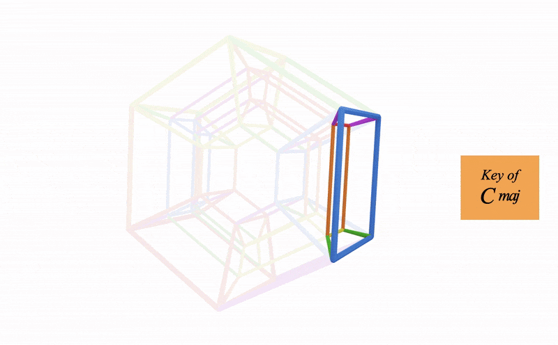

GEOMETRY:
These are the four arcades:
Arcades connect keys in whole tone families:
Watch above how we start with the C major key cube,
and then extend to include the D major key cube which is whole step above
We continue joining keys by whole tones until we come back to C
Firstly let visualise the four keys of the orange hypercube:
Each key cube branches out into a different arcade
This makes another family of keys related by whole tones
This is how we can start to shift the function rules of the hypercubes (more on this at the end of this page)
Here's the next arcade which is connected to the Gb major key cube in the orange hypercube:
Here's the final fourth arcade coming off the A major key cube in the orange hypercube:
When you rotate around the four orange keys, you are switching arcade:
When you rotate around an arcade, you are switching hypercube:
The 'inner' and 'outer' arcades have the same six keys, just reversed:
The same goes with the 'front' and 'back' arcades:
Notice the tritone relationships here,
Focus on the key of F and how it swaps with the key of B
Can you see how its jumping 180 degrees across the hypercube?
I've simply chosen chords from the arcade and used them acording to their function in the arcade
For example C major to A major in the orange hypercube would be tonic to tonic
This is the beauty of the arcades (and metaprism)
We can shift our colour function rules that exist in the hypercube
There's much more to discuss here, and we'll explore more music in the cook book
But lets move onto the final geometry page which is the atria
Back to Metaprism | Continue to Atria